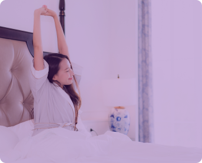

Daily Routine

Aktivitas Pagi
Mulailah pagi harimu dengan minum air putih 1-2 gelas untuk menghidrasi tubuh dengan
energi baru. Jangan lupa untuk sarapan sehat dengan karbohidrat kompleks, protein,
dan lemak sehat antara pukul 06.00-09.00 untuk energi yang stabil sepanjang hari.


Langkah-langkah Aktivitas Pagi

Minum Air Putih
Minumlah 1-2 gelas
Minum air putih setelah bangun untuk menghidrasi tubuhmu dan membangkitkan energi.
Minum air putih setelah bangun untuk menghidrasi tubuhmu dan membangkitkan energi.
Senam Ringan atau Yoga
Lakukan beberapa gerakan
Senam ringan atau sesi yoga
yang menenangkan untuk mempersiapkan tubuh dan pikiranmu untuk hari yang produktif.
Senam ringan atau sesi yoga
yang menenangkan untuk mempersiapkan tubuh dan pikiranmu untuk hari yang produktif.

Sarapan Sehat
Santaplah sarapan yang seimbang
dan mengandung karbohidrat kompleks, protein, serta lemak sehat untuk memberi energi yang stabil sepanjang hari.
Tahukah Kamu?
Sarapan adalah kegiatan makan dan minum yang terpenting dalam rutinitas keseharian kita. Sarapan sangat penting untuk memenuhi sebagian kebutuhan gizi sebelum melakukan aktivitas sehari-hari. Melewatkan sarapan dapat berefek buruk pada kesehatan kita. Penelitian menunjukkan bahwa, kurangnya konsumsi sarapan secara teratur berkaitan dengan gangguan tidur pada remaja. Melewatkan sarapan berhubungan dengan durasi tidur yang lebih rendah dan gangguan tidur yang lebih tinggi (Beigrezaei et al., 2022).
dan mengandung karbohidrat kompleks, protein, serta lemak sehat untuk memberi energi yang stabil sepanjang hari.
Tahukah Kamu?
Sarapan adalah kegiatan makan dan minum yang terpenting dalam rutinitas keseharian kita. Sarapan sangat penting untuk memenuhi sebagian kebutuhan gizi sebelum melakukan aktivitas sehari-hari. Melewatkan sarapan dapat berefek buruk pada kesehatan kita. Penelitian menunjukkan bahwa, kurangnya konsumsi sarapan secara teratur berkaitan dengan gangguan tidur pada remaja. Melewatkan sarapan berhubungan dengan durasi tidur yang lebih rendah dan gangguan tidur yang lebih tinggi (Beigrezaei et al., 2022).